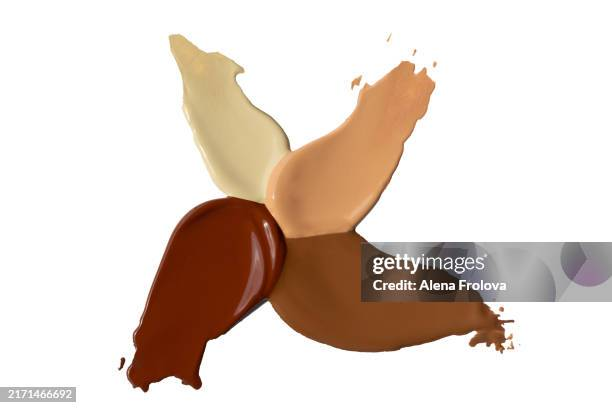

It’s been 70 years since black people received equal rights in this country yet they are still fighting for representation and inclusion in the 21st century. Back in 2014 most makeup brands only carried 20 foundation shades, averaging between 1-4 dark shades compared to 5-10 light shades.
The conversation surrounding inclusivity in cosmetics hasn’t been a huge topic until these past couple of years with brands like Fenty and Make Up For Ever being released, challenging the current standard of inclusivity. Suddenly, every brand doubles their shade range and 40 shades becomes the minimum.
Inclusivity in the makeup industry is more than just providing a handful of dark shades, it’s about making sure every demographic is equally represented and no one is left out.
The 'Fenty Effect'

Courtesy of Getty Images.
In 2017, world-famous singer Rihanna released her makeup brand, Fenty Beauty, with a revolutionary 40 foundation shades, with an equal amount of light, medium, tan, and dark shades. This makeup line was made with the intention of including all skin colors and undertones.
While the concept of releasing 40 foundation shades wasn’t anything new to the industry, as brands like Make Up For Ever, Sephora, and Maybelline released 40 shades a couple of months prior, the fact that Rihanna dropped that many shades right out the gate made the drop groundbreaking. Fenty was built on the idea of being inclusive to all and fully delivering to customers.
Following this drop, every other makeup brand nearly doubled their shade range to match Fenty. This trend is known as the ‘Fenty Effect’. About a year after the launch in 2018, digital beauty creator Nikki Lopez analyzed this effect. In her study, when comparing Fenty’s foundation to U.S. bestsellers, Lopez found that there were a few brands that provide equally as many dark shades as Fenty but not as many extremely light shades like Fenty. Overall Fenty has better distribution all across the board.
However, as this study points out and many argue, Fenty doesn’t provide foundation shades in the darkest range. While this may be true, Fenty provides more equality compared to other brands and they are standing by their mission of inclusivity.
Today, Fenty Beauty has a total of 55 foundation shades, and plenty of other brands have followed along with it.
'Tar In A Bottle':The Case of Youthforia
Back in October of 2023, Shark Tank brand Youthforia received backlash for their lack of inclusivity after releasing 15 shades of the Date Night Skin Tint Foundation, only providing three dark shades. In response to the criticism, they released 10 more shades in March of this year which faced even more backlash after popular beauty influencer, Golloria George, reviewed the product.
Golloria George is a dark-skinned beauty influencer with 3 million followers on tiktok who is best known for her reviews of makeup brands' darkest shades of foundation. She makes these videos as a way to raise awareness and push for change in inclusivity in the industry. So when she reviewed Shade 600, the darkest shade of the foundation, comparing it to black face paint and calling it “tar in a bottle”, the internet went into an uproar.
In this new launch, there were still only five dark shades. There was little to no attempt at adding diversity in terms of undertones, giving the feeling of a hand-out. The influencer pointed out that the company was advertising darker shades online compared to what was actually in the bottle.
Golloria’s main argument was that the brand never really cared about inclusivity and dark-skin tones were an afterthought, and in an interview with Refinery29, Golloria says that “inclusivity is the bare minimum..and only catering to a certain demographic…opens up a bigger conversation of anti-Blackness.”
In an interview with Lisa Alli, a former Corporate Communications student, about her thesis on inclusivity in cosmetics, she talks about how companies aren’t doing enough research on their consumers or the economy. She also talks about how some brands are hesitant to expand their range because it “might conflict with their established brand image or identity. These
brands may also perceive no urgency to broaden their shade range if they believe other companies are already addressing the demand effectively.”

Courtesy of Unsplash.
The Path To True Inclusivity
As of today, in December 2024, while many makeup brands have expanded their foundation shade range to well over 40 shades, there is still a lack of diversity and range when it comes to darker shades. In a study conducted by SeeMe Index, they gathered data on how inclusive the top 40 makeup brands are. The index was scored based on “3 key components** (ads, product, DEI commitments) across 6 identity dimensions (gender expression, skin tone, age, observed sexual orientation, body size, and visible disability).” All of the brands in the bottom six brands that “think inclusive”, had a lack of external DEI efforts but had slightly better public advertisements and product line up.
In the interview with Lisa Alli she talked about this in relation the YSL liquid blush controversy, where “the brand marketed their new line of liquid blushes as “universal”and even went to the extent of using darker skin toned models to advertise the Product,” when in reality the product did not work for dark skin. Like Youthforia mentioned previously, many brands will market their product to a diverse audience to get people to buy their products when in reality they lack actual inclusivity.
So, while there has been an increase in foundation shades over the years, are all of these brands actually promoting diversity and inclusivity or are they just giving the appearance of it? There is still a long way to go for people of color and inclusivity to be considered first in the cosmetics industry, but 2024 has started a lot of conversation and seen a lot of growth.
Back to top